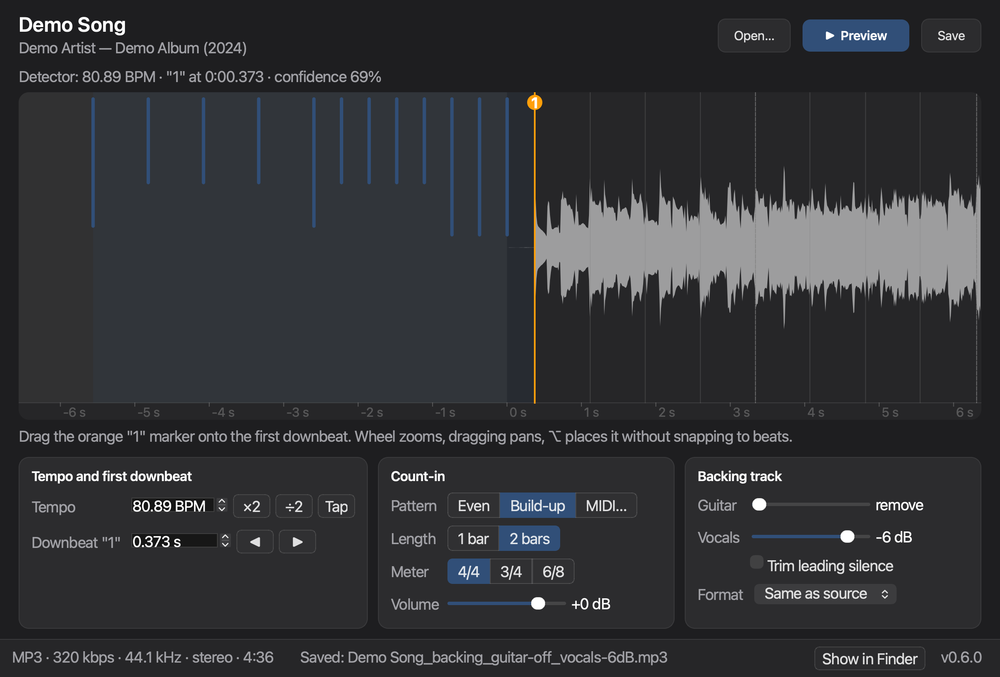
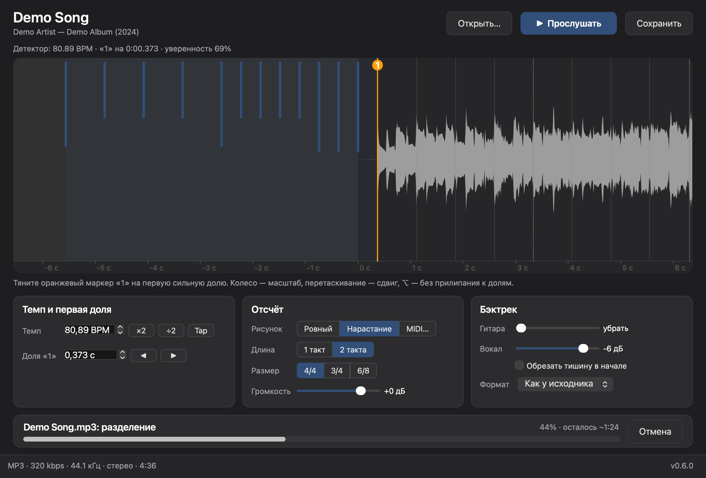

A count-in for every songОтсчёт перед любой песней
Count-In finds the tempo and the first downbeat and adds a drum count-in that lands exactly on the “one”. It can also turn guitar and vocals down for a backing track. Count-In находит темп и первую долю и добавляет отсчёт палочками, который точно попадает в «раз». А ещё убирает гитару и вокал, чтобы получилась минусовка.
Free · works offline · updates itself · release notes Бесплатно · работает без интернета · обновляется сама · что нового




What it doesЧто умеет
Everything runs on your computer, from beat detection to separation.Всё работает на вашем компьютере, от поиска долей до разделения инструментов.
Sample-accurate count-inОтсчёт с точностью до сэмпла
A neural beat tracker finds the tempo and the first downbeat. Each click is placed on its own sample, so the timing never drifts.
Нейросеть находит темп и первую сильную долю. Каждый щелчок ставится на свой сэмпл, поэтому ритм не уплывает.
Your patternСвой рисунок
One or two bars in 4/4, 3/4 or 6/8. Even, build-up with the last hits louder, or your own pattern from a MIDI file.
Один или два такта в 4/4, 3/4 или 6/8. Ровный, с нарастанием и акцентом в конце или свой рисунок из MIDI-файла.
Backing tracksМинусовки
BS-RoFormer separates guitar and vocals in one pass. Each gets its own slider, from a few dB down to fully removed.
BS-RoFormer отделяет гитару и вокал за один проход. У каждого свой ползунок: приглушить на пару дБ или убрать совсем.
Listen before savingПрослушивание до сохранения
Space plays the count-in and the first seconds of the song. The sliders change the mix while it plays.
Пробел проигрывает отсчёт и начало песни. Ползунки меняют звук прямо во время прослушивания.
Formats and tagsФорматы и теги
Opens mp3, FLAC, ALAC and WAV. Saves MP3 320 kbps, FLAC, ALAC or WAV with tags and cover art, sorted into Artist / Album folders if you like.
Открывает mp3, FLAC, ALAC и WAV. Сохраняет MP3 320 кбит/с, FLAC, ALAC или WAV с тегами и обложкой, по желанию раскладывает по папкам «Исполнитель / Альбом».
Offline, updates itselfБез облака, обновляется сама
Your music never leaves the computer. The network is used only to fetch new versions, which install on restart.
Музыка никуда не отправляется. Интернет нужен только для новых версий, они ставятся при перезапуске.
How it worksКак пользоваться
A count-in takes seconds. Separating a 4-minute song takes about 2.5 minutes on Apple Silicon, longer on Windows.Отсчёт готов за секунды. Разделение 4-минутной песни занимает около 2,5 минуты на Apple Silicon и дольше на Windows.
Drop a track onto the window. The app finds the tempo and the first downbeat.
Перетащите трек в окно. Программа найдёт темп и первую сильную долю.
Check the orange “1” marker. If the detector missed, drag it to the right beat.
Проверьте оранжевую метку «1». Если детектор ошибся, перетащите её на нужную долю.
Pick the pattern, length and meter. For a backing track, lower guitar and vocals.
Выберите рисунок, длину и размер. Для минусовки уберите гитару и вокал.
Preview with Space and save. The new file opens in Finder or Explorer.
Прослушайте пробелом и сохраните. Готовый файл откроется в Finder или Проводнике.
First launchПервый запуск
The app is not signed yet, so the system asks once.Программа пока не подписана, поэтому система один раз переспросит.
macOS
Unzip and drag Count-In.app to Applications. When the first launch gets blocked, open System Settings → Privacy & Security and click “Open Anyway”.
Распакуйте и перетащите Count-In.app в «Программы». Когда первый запуск заблокируется, откройте Системные настройки → Конфиденциальность и безопасность и нажмите «Всё равно открыть».
Windows
Unzip and run Count-In.exe. If SmartScreen appears, click “More info” → “Run anyway”.
Распакуйте и запустите Count-In.exe. Если появится SmartScreen, нажмите «Подробнее» → «Выполнить в любом случае».